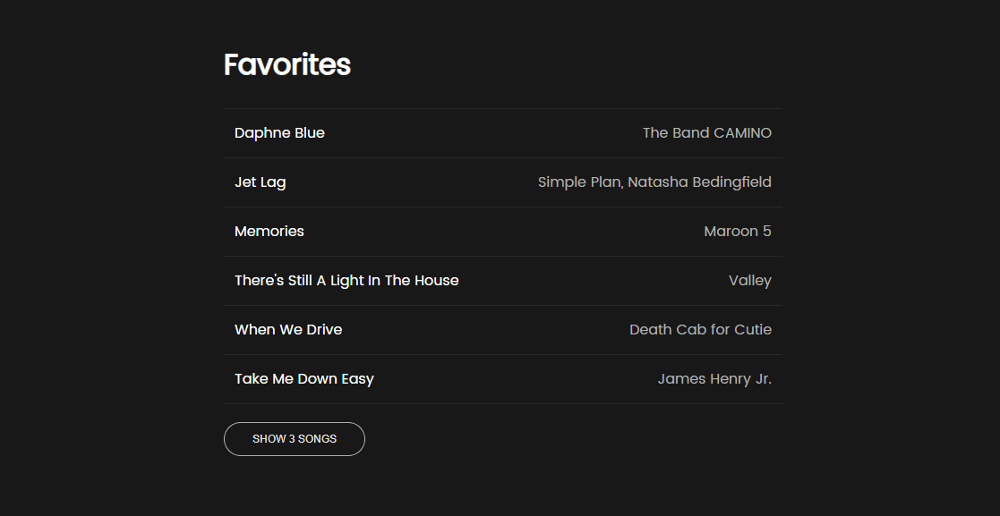
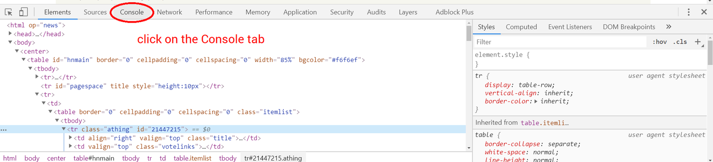
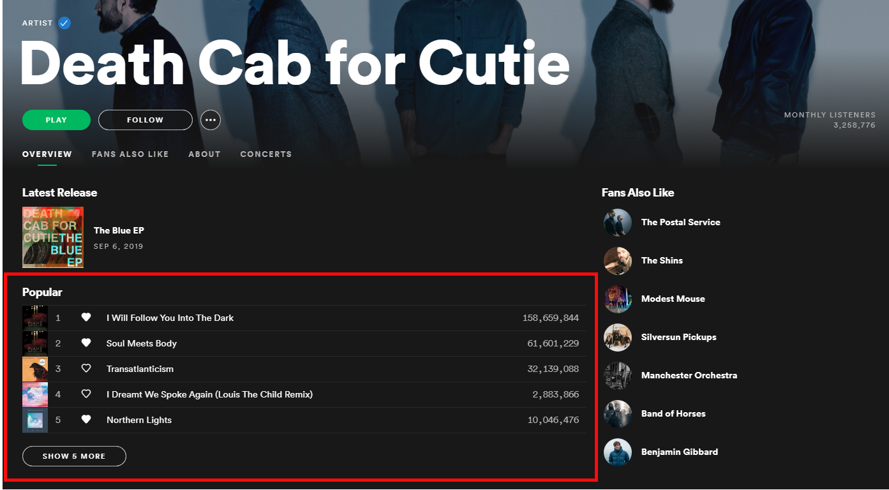
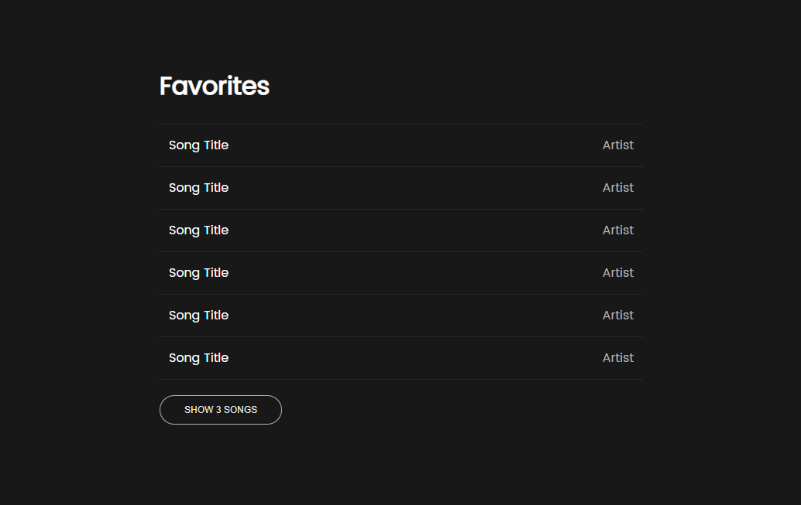
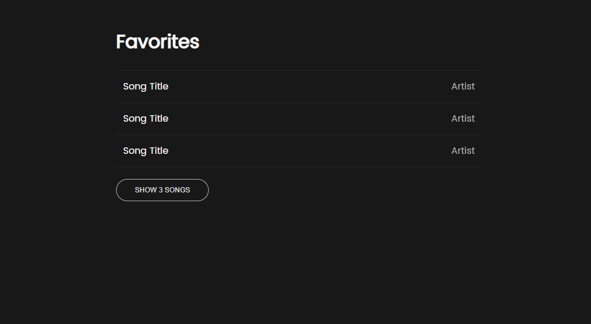

document.getElementById, and manipulating classes.What we'll be doing
First, we'll be writing JS in the web console to walk through how
document.getElementById can be used. Then, you'll write some code to add this toggle
functionality for our Spotify-style playlist page:

Review: How to get to the console
For this class we'll be providing instructions for using the console and tools in Google Chrome. Other browsers like Firefox have their own, similar console and web developer tools, but for consistency we recommend that you follow along using Chrome.
To get to the console:
- right-click and select Inspect Element, or cmd/ctrl + shift + i
- click on the Console tab 
Part 1: Your Favorite Music
For this homework, we'll be mimicking the popular song list on a Spotify artist page. Our goal is to be able to toggle the second half of the songs.

When you open index.html it should look like this:

To be able to hide the second half of the songs, we're going to make the CSS class that we'll use in our JS code in the next part.
- Fill in
index.htmlwith your top 6 favorite songs, and the artists that they're by. - Create a class in
style.csscalled.hidden, and give it one rule,display: none; - Save and refresh index.html so that it has this new CSS loaded. All your song elements should still be visible.
- We'll use this CSS class in the next part.
Part 2: document.getElementById
In CSS, we use the hashtag to "select" the HTML element with a certain id, and then write the CSS
rules to apply to that element. The corresponding thing in JS is the built-in function
document.getElementById, which takes one argument - a string that is the id. So in CSS,
we would say #blue-box, and in JS we would say
document.getElementById("blue-box").
For this part, we're going to go back to using the console. We're going to type JS code line-by-line into the console, so that we can really understand what is happening.
We recommend that you have two browser windows open side-by-side, with this page on the left and
index.html on the right, so that you can follow the instructions easily.
- Open the console.
- Type a line to call the function to get the element with the id
songs-second-half. Hit enter. The console should respond with the corresponding HTML tag! Remember how functions can return values? This is what the function call outputted. - Move your mouse to hover over the HTML tag outputted by the console. The HTML element on the page (the last three songs) should be highlighted.
- However, we don't want to write this long line of the code every time we want to do something
with this element. This is where variables are handy, to store something so that we can use it
later.
Write the same line of code to get to the element, but this time store it in a variable calledsongsSecondHalf - Just for clarity, let's check what's stored in the variable. Type
songsSecondHalfand hit enter. The console should again respond with the same HTML tag as earlier. Yay! - JS can tell us a lot about this HTML element!! What classes does it currently have? Type
songsSecondHalf.classListand see what the console responds (there should be no classes). - What child elements does this HTML tag contain? Type
songsSecondHalf.innerHTMLand see what the console says. - Now let's try adding a CSS class:
songsSecondHalf.classList.add("hidden");If you added the.hiddenclass instyle.cssproperly in part 3.1, then the second three songs should have disappeared!
 - Try
songsSecondHalf.classListagain - the list should now includehidden. - Now let's try removing the class:
songsSecondHalf.classList.remove("hidden");The songs should've appeared again! - Try
songsSecondHalf.classListagain - the list should be empty again. - JS actually has a convenient way of doing this (adding/removing the same class), called
.classList.toggle("class"). Try calling this function a few times onsongsSecondHalfwith thehiddenclass. - Take a screenshot of your console showing that you completed the steps above
and put this screenshot in the same folder as
index.html - All the stuff we do in the console is temporary, though. Let's actually code in a file now!
Note that the
<script>tag is already in the file for you. Createscript.jsin the assets/js folder. - Define a function named
toggleSongs. The function should take no parameters and will not return a value. When the function is called, it should toggle thehiddenclass for the#songs-second-halfelement (which is basically what we just walked through in the console!).
Part 3: Make the toggle button work
Next lecture, we'll learn about how to call functions specifically when the user clicks on
something. As a quick teaser, copy and paste this code in script.js, and if you wrote
the toggleSongs function correctly, the button on index.html should now
work! If clicking the button does not work as expected, review the previous part.
document.getElementById("toggle-button").onclick = toggleSongs;As usual, complete this week's reading response in design_responses.html after reading this medium article.
Submit your files to your GitHub Submission Repository by copying all the files from hw8-starter into the hw8 folder of your submission repository (replace the index.html originally in it). In your terminal, from your GitHub Submission Repository, run the following Git commands:
- git add -A
- git commit -m 'finished hw8'
- git push
This assignment is due by Thursday, April 11th at 7pm PT.